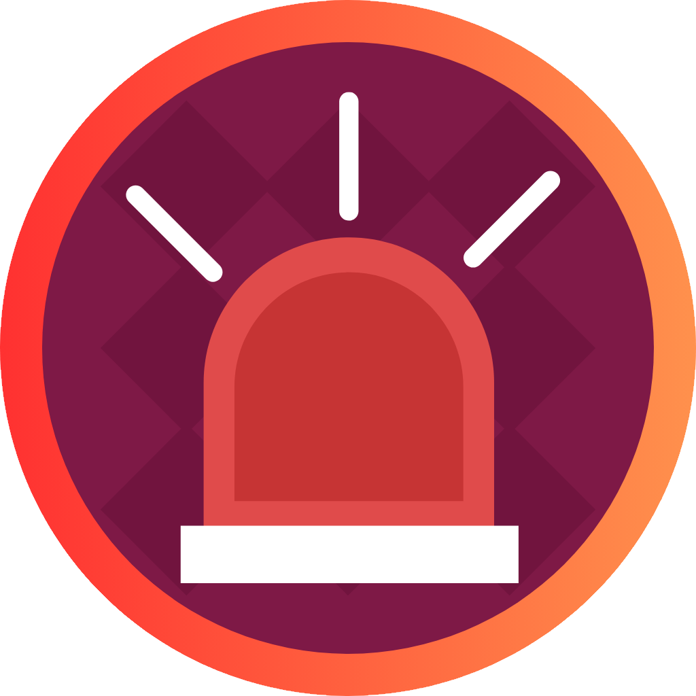

<ion-header [translucent]="true">
  <ion-toolbar color="medium">
    <ion-title><h2>Alarma de Robo</h2></ion-title>
  </ion-toolbar>
</ion-header>

<ion-content [fullscreen]="true">

  <div class="container">

    <h1>Inicio de Sesión</h1>

    <form class="needs-validation" [formGroup]="formLog">
      <ion-input label="Correo:" labelPlacement="stacked" type="email"  formControlName="email"></ion-input>
      <ion-input label="Clave:" type="password" labelPlacement="stacked" formControlName="password"></ion-input>
      
      <div *ngIf="this.cargaFin === true; then mostrar else esperar"></div>

      <ng-template #mostrar>

        <ion-select label="Usuario rápido" labelPlacement="stacked" (ionChange)="onQuickUser($event)">
          <ion-select-option *ngFor="let item of arrayTestUsers" [value]="item">{{item.perfil}}</ion-select-option>
        </ion-select>
      </ng-template>
      <ng-template #esperar>
        <ion-select label="Cargando" labelPlacement="stacked"></ion-select>
      </ng-template>
      
      <ion-button class="login" (click)="this.iniciarSesion()">Ingresar</ion-button>
    </form>

    
  </div>
</ion-content>
